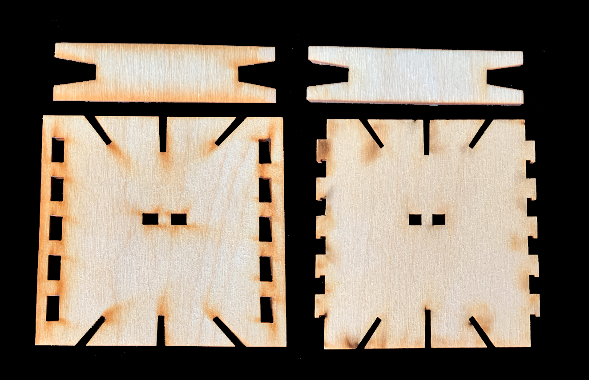
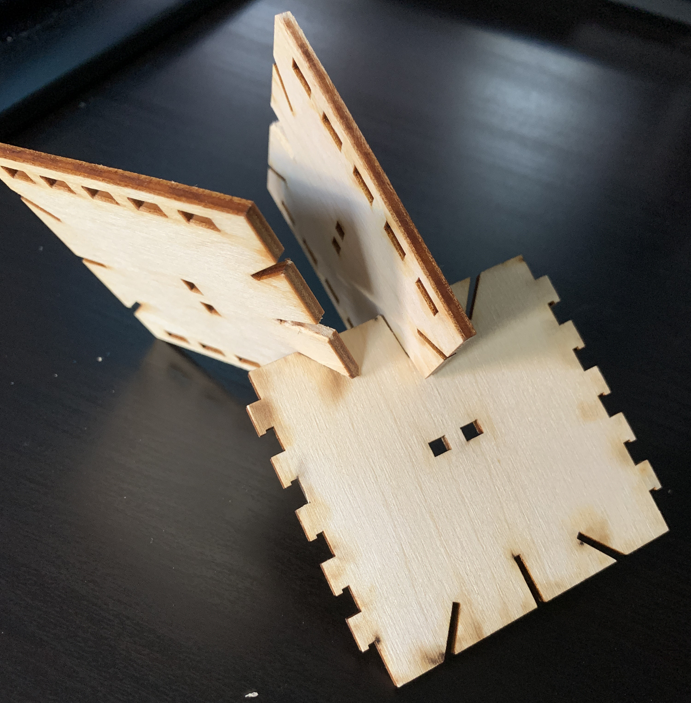
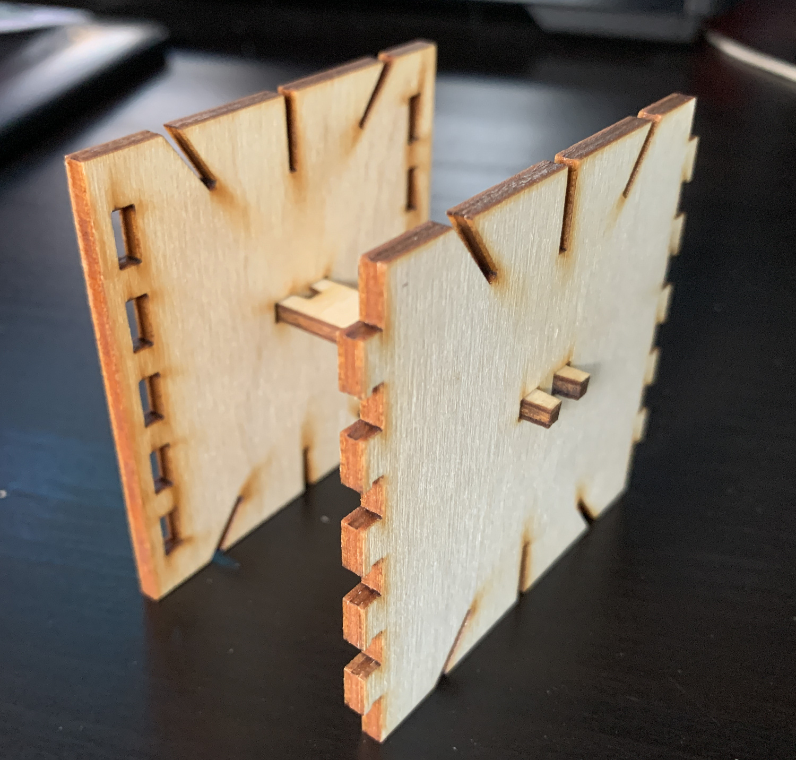

Modularity, Tesselation & Complexity
Phase 1
1st pass: Exercise in Testing some 2d Tesselations and Origami Modules

Petra Star origami

I connected the shapes in which I made a circle and a folded flat box.

I connected the triangle angle and used the pockets to insert each module.

Created a simple triangle tesselation.

Messed with the colors and moved it around.

This one definitely made me think of flowers. We usually find math in nature.
2nd Pass: Exercise in group Tesslation and Modularity with some 2d Shapes
Our group decided to start a diamond as shape. We made our own shapes and decided Edward's design to be the final common shape we all share.

This is my own design off of the common shapes.

Group mates shapes to connect together.

Final result of our shapes connceted created a scales/chain mail pattern. It mostly just connected diagonally like that since the top and bottom have to stay the same to connect with each other. I thought it was challenging to communicate that our shapes had somehow connect with each other. I thought each piece all had to incorporate our shape into the common connecter. Looking at other groups, I think we all were a bit confused of how our shapes should have connected. Our shapes put together cannot be pieced together, while other groups struggled to fill in the gaps of their modularity. It would be interesting to see checkered pattern instead of a stripe pattern I did when I was messing with colors.
Phase 2: 3D Fastener BrainStorming Designs, Mockups and design approaches
My inspiration came from product and packaging design. I always see these flaps and a cut slit being used to fasten food containers, boxes, and other products.
Used illustrator to draw and a cricket to cut out my shapes. So my shapes are basically a + shape which is almost forms a closed box. I added a cut out square for design.

I used an x-acto knife to cut a slit on part of the end to insert the tab. The fastener works really well because the rectangle hooks hangs onto the slit paper.

When using less parts, this can also be formed into a box shape, but with 6 pieces, ended up with a spherical shape.
It turned out well than I thought it would.
Phase 2:
Fastener Designs

Jason created a prototype of the finger joints.

We added on other fasteners besides the finger joints. We revised the final versions and made sure everything connected and not leave any gaps.
Marc made a really cool emblem design for our box TEAM JERM WHOO!

We decided to create a box shape using finger joints. We also created something on top to add another layer of a box. There are different angle slots and key "fork" fasteners to connect each square on top of each other like a 3 tier cake almost. The material we will be using to lazer cut is wood and we hope that the edges and fasteners give us the freedom to place each square in a different way. It was very interesting trying to think of creating a 3D piece by creating a 2D Design. You really have to consider how the result will be once its actually put together.
Phase 3: Goldilocks Laser Tests
Fastener Designs

Lazer cuts of the pieces we had.
There are slots inserted on the edges where you can insert it at an angle or 90 degrees.
Fork piece connecter in action.

Our group initially wanted to create a box shape with different fasteners.Each side of the box had our initials and it was supposed to be a keepsake box where you can unconnected it and form it different ways like a lego piece. The design of the box ended up getting cut and we realized we had to not make the lines connect or else the lazer will just cut off the entire thing. If you looked at our fastener designs, you can see that the JERM pieces did not make it. We made a lot of extra pieces so I'm glad that those survived. It would be more interesting if we considered using weird off shapes incorporated into the pieces. We mostly stuck with squares because we wanted to make sure the fasteners worked. For our next design, I really want to try making more interesting shapes that form together to make a coherent piece.Yet again, from this experience, to visualize things in a 3D form but making 2D parts was a bit tricky to make. I think we're getting a hang of it.